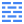
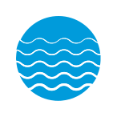
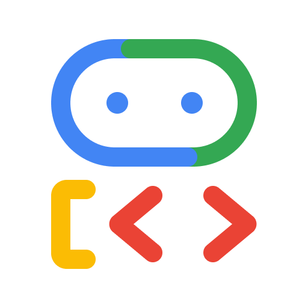

Architecture
A reproducible Kubernetes lab environment running on cloud VMs with Talos Linux, featuring daily create/destroy cycles for cost optimization, automated backup/restore via Velero, and an AI agent platform (Commerce + Supply Chain) built with Python ADK using A2A, MCP, and UCP protocols.
System Deployment Diagram
Developer Laptop (localhost)


Dashboard UI
React · gcloud · velero · kubectl
CLI / Makefile
Go binary · gcloud · velero · kubectl
Terraform
terraform apply
talosctl
bootstrap · kubeconfig
kubectl
apply manifests
IAP Tunnel
Identity-Aware Proxy · secure access to VMs

Firewall RulesControl Plane
cp-0
Talos · zone-a
Worker
worker-0
Talos · zone-b
Worker
worker-1
Talos · zone-c
Talos OS on GCE (Kubernetes)
namespace: agents

commerce
Deployment · 8001
A2A
supply-chain
Deployment · 8002
·
redis
StatefulSet + PVC
supply-chain
Google Maps (external API)
commerce
External Clients (AI agents via REST)
namespace: velero

velero-server
Deployment
csi-driver
DaemonSet
Cloud Storage (GCS)
Terraform State
Remote backend for TF state
Velero Backups
K8s resources + volume snapshots
Talos Image
OS image for GCE instances
External APIs
Google Maps Platform
Route optimization · MCP from supply-chain
API / Network call
Boundary / Zone
Component / Service
C4 System Context
Person
Developer
Uses CLI or Dashboard to manage the lab cluster
CLI / Dashboard
Software System
k8s-lab
Reproducible K8s lab with daily create/destroy lifecycle
Terraform, Talos Linux, Velero, Go, Bash
API calls (via IAP)
External System
Google Cloud Platform
VMs, networking, storage, IAM, IAP
GCE, GCS, VPC, IAP
C4 Container Diagram

Dashboard UI
Real-time cluster monitoring, actions, logs
React, Vite, Tailwind, WebSocket

CLI / Makefile
Command-line interface for all operations
Go binary, Make, Bash

API Server
Backend serving status, auth, operations
Go, net/http, goroutines
Terraform
Provisions and destroys cloud infrastructure
HCL, GCS remote state
Talos Linux
Immutable OS, bootstraps K8s via talosctl
API-driven, no SSH
Kubernetes
Container orchestration on Talos VMs
1 CP + 2 Workers
Velero
Backup/restore K8s resources and volumes
GCS backend, CSI snapshots
Commerce Agent
Conversational ordering, cake design, checkout

ADKSupply Chain Agent
Inventory management, order service, route optimization
ADK
 A2A
A2A
 MCP
8002
MCP
8002
Redis
In-memory store for orders, inventory, and sessions
StatefulSet + PVC
Compute Engine
VMs (e2-medium)
Cloud Storage
TF state + Velero backups
VPC Network
Subnets + Firewall
Persistent Disk
PVCs via CSI driver
Identity-Aware Proxy
Secure tunnel to VMs
Google Maps
Route optimization via MCP
Layered Architecture
Layer 5
AI Agents
Conversational agents with A2A, MCP, and UCP protocols
Commerce
Supply Chain
Google Maps
UCP
Layer 4
Applications
Data layer for agent workloads
Layer 3
Platform Tools
Backup/restore, storage provisioning
Velero
CSI Driver
Layer 2
Kubernetes Cluster
1 control plane + 2 workers across availability zones
Talos Linux
Layer 1
Infrastructure
VMs, networking, firewall, persistent disks
Daily Lifecycle (Cost Optimization)
Morning → Day → Evening → Next Day
Deploy
Provision VMs, bootstrap K8s, install tools
k8s-lab deploy gcp
Work
Deploy apps, experiment, develop
kubectl apply ...
Backup
Snapshot K8s resources + volumes to GCS
k8s-lab backup gcp
Destroy
Tear down all VMs and networking
k8s-lab destroy gcp
Restore
Deploy fresh infra, restore from backup
k8s-lab restore gcp
Backups persist in GCS across destroy/create cycles. Only pay for compute during active hours.
k8s-lab is a Go CLI binary
k8s-lab is a Go CLI binary
Networking
- VPC — Custom mode, single region
- Subnet — /24 CIDR for cluster nodes
- Firewall — Talos API, K8s API, inter-node
Compute
- Control Plane — 1x e2-medium (zone-a)
- Worker 1 — 1x e2-medium (zone-b)
- Worker 2 — 1x e2-medium (zone-c)
- Boot disks — Talos OS image
Storage
- TF State Bucket — Remote backend for Terraform
- Velero Bucket — Backup storage location
- PVCs — CSI-provisioned persistent disks